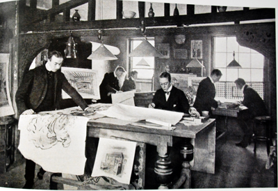
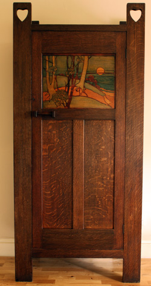

From its opening in Regent Street in 1875 the firm of Liberty & Co developed a comprehensive range of furniture and desirable goods to support the creation of the 'House Beautiful' for those who could afford it. By 1900 the Liberty brand was well established and the Art Journal featured the ‘Growth of an Influence’ featuring the Liberty Design Studio and describing Liberty & Co as a ‘Huge Art Centre’ .

By 1902, the Liberty Furniture for Town Flats and Country Houses catalogue featured interiors with stencilled walls in Voysey style and the Athelstan bedroom suite in stained oak with heart pierced structure and stencilled picture panel. Surely the most picturesque in the art furniture range, these pieces are rare and highly collectable.
The Liberty range at this time also included elegant inlaid work in mahogany and satinwood, cabinets with leaded glass being popular. These are reasonably priced in todays market, offering value for money for collectors.
In the early years, from 1883, the primary creative influence on furnishing and decoration was Leonard Wyburd. Wyburd left Liberty in 1903 but his influence in design continued in subsequent years . After Wyburd left the imagery of Knights in Armour, Olde England, and sailing ships faded slightly and the structural character of robust oak furniture, with armoured metalwork gave way to a calmer, more modern form. The Simple and Durable Furniture catalogue of 1906 introduced the Cottage, Hathaway and Hambledon suites in oak offering understated elegance leading the way to the Inexpensive Furniture range of 1907. Here we see heart or spade piercing in stained oak with leaded glass, gentle undulating curves and the restrained charm of repoussè copper handles with heart design.

Leonard Wyburd Arts and Crafts Pioneer
Whilst Liberty continued to cater for a broad range of traditional taste in furnishing it is clear that the artistic range introduced and designed by the Wyburd studio helped to lead opinion and to introduce Arts and Crafts style to a much wider market. By the turn of the century, artistic furniture with all of the characteristics of the early Wyburd style, heart piercing, mottoes, geometric shapes, ‘armoured' furniture, hand beaten copperware and artistic decoration was all the rage. Much of the credit for the popularity and the development of this style must be due to Wyburd for his designs and his flair in illustration. Had he been more inclined to seek the limelight he may well have been accorded a more significant place in the hierarchy of designers in the British Arts and Crafts movement, alongside Voysey and Baillie Scott. However even with the uncertainties in attribution and in chronology it is clear that he initiated a style which generated income and prestige for his employers and brought great interest and appreciation from contemporary critics. As the century turned and the techniques of advertising and marketing moved into the twentieth century Wyburd continued to influence taste in a significant way.